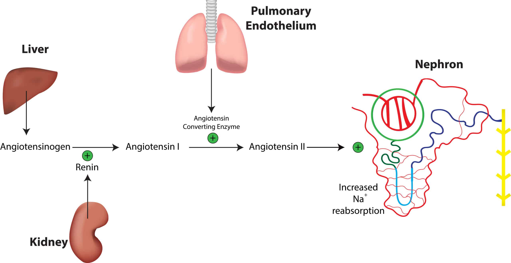

What Challenges Do the Kidneys Face, and How Do They Overcome Them?

The kidneys are two bean-shaped organs about the size of a fist which reside just below the rib cage on either side of the spine. They constantly face problems with waste products from the blood, imbalanced electrolyte levels, and the task of regulating blood pressure. In this post, we will uncover how the kidneys deal with these issues on a general and microscopic level.
The kidneys are commonly referred to as the ‘master chemists’ of the human body. This is because they filter, on average, approximately 190 litres of blood. Not only do they filter a very high quantity of blood, but they do it at high efficiency. It takes 30 minutes for all the blood in the average human being to be completely filtered!
How do the kidneys perform such amazing tasks at high volume and rate, while retaining the essential substances to a tee? This post will go through how the kidneys work, the challenges which the kidneys face day-to-day and the physiological techniques that are used to overcome them.
Read Time: ~7 Minutes, Reading Level: ~Colledge Graduate, Word Count: 1828 -> All according to WordCounter